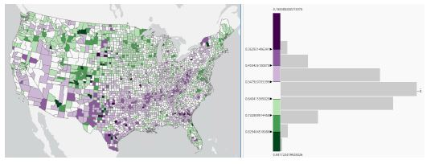

Data visualization helps users digest information by using symbols to visually represent quantities and categories. As a GIS professional, we have the ability to present data in many ways, which help to make comparisons and perceive relative proportions, patterns, relationships, and trends. This is especially important in the analysis process, from exploring data, to interpreting results, to communicating findings.
In this course I learned how to visualize voter turnout using various visualization techniques to explore relationships and patterns of voter turnout and to identify potential variables to use in my predictive analysis. Modeling voter turnout, and understanding where low turnout is prevalent, can inform outreach efforts to increase voter participation.

Using the county elections layer, I open the symbology tab. I am using graduated colours (commonly known as choropleth or thematic map) in the analysis, which assigns a shade of colour to show the relative difference between the feature values. A list of classification methods appears and I decided to use standard deviation. The colour scheme I have picked for the symbology is purple-green.
To create a bar chart, I right click on the layer, point to create chart, and select bar chart. Select state as the category, and voter turnout as the numeric field.
A box plot chart allows users to visualizae and compare the entire distribution of county voter turnout values for each state. Box plots split numeric values into four equal quartiles and visualize five key statistics for each distribution: minimum, first quartile, median, third quartile and maximum. The whiskers extending from the boxes span from the minimum value to the maximum value, illustrating the full range of values found in each state. The boxes span from the first quartile to the third quartile, illustrating the range of the middle half of values, or the interquartile range (IQR). THe IQR indicates the size of spread, or variability, in voter turnout values in each state.
A linear trend line is added to each scatter plot in the matrix. The direction of the trend line indicates whether the variables have a positive or negative relationship, and the R-squared (R2) value indicates the strength of the relationship.